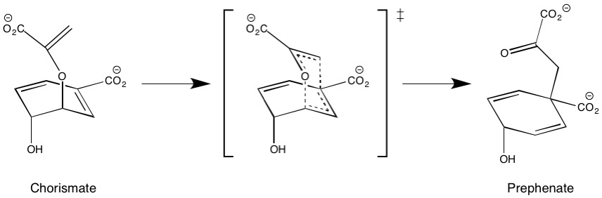

Chorismate mutase catalyzes the Claisen rearrangement of chorismate to prephenate and provides a simple test for modeling an enzyme-catalyzed reaction. The entry in the PDB for 3CSM1 is dimeric, so for convenience only one of the systems was used.
From Wikipedia, the mechanism for the reaction in Chorismate Mutase can be summarized as follows:

In 3CSM, the chorismate di-anion, [C10H8O6]=, has been replaced by a similar system of formula [C10H10O6]=. The extra hydrogen atoms on C6 and C8 prevent the Claisen rearrangement, and effectively "freeze" the ligand in what looks like the transition-state geometry. This provides a good starting-point for locating the transition state for the reaction.
1: Sträter N, Schnappauf G, Braus G, Lipscomb WN. Mechanisms of catalysis and allosteric regulation of yeast chorismate mutase from crystal structures. Structure. 1997;5(11):1437-1452. doi:10.1016/s0969-2126(97)00294-3